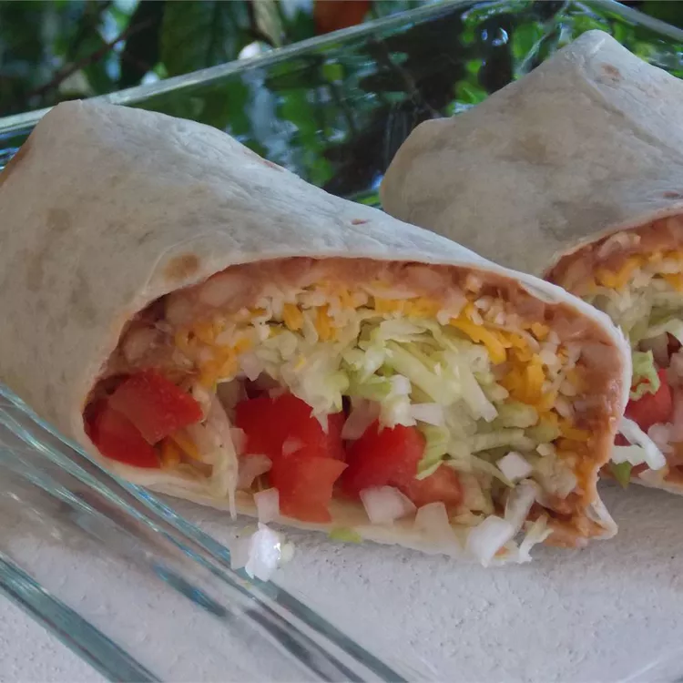

Big Bean Burrito

A Delicious Burrito!
This recipe takes 15 minutes, and yields 1 burrito
This Recipe was stolen (with love) from AllRecipes.com!
Ingredients
- 1 Cup Refried Beans
- 1 Tortilla
- 2 Lettuce Leaves
- 0.5 Avocado
- 0.25 cup Pico De Gallo
Instructions
- Stir refried beans in a saucepan over medium-low heat until hot, 2 to 4 minutes.
- Warm tortilla in a skillet over low heat until softened, 1 to 2 minutes. Transfer tortilla to a plate.
- Layer lettuce onto tortilla. Spread warmed refried beans, avocado slices, and pico de gallo on top of lettuce. Roll tortilla around the fillings into a burrito shape.